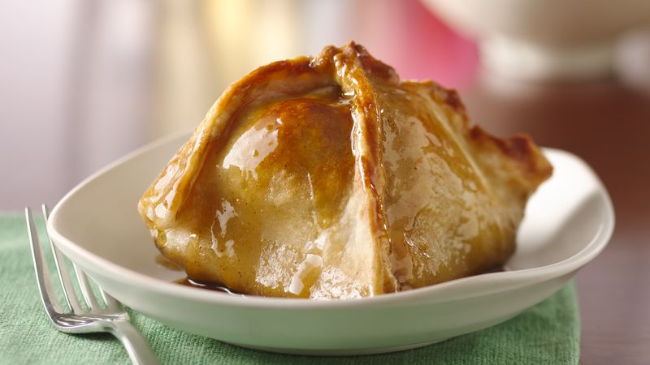

Apple Dumplings

A delicious yet simple treat.
Ingredients:
- 1 packet puff pastry sheets
- 1/2 cup butter, melted
- 1/2 cup brown sugar
- 6 large apples, peeled and diced
- 1 tsp ground cinnamon
- 1 tsp ground nutmeg
- 1 tsp vanilla essence
- 3 egg, for brushing
Instructions:
- Preheat your oven to 200C/392F. Roll out your pastry and cut into 5" squares. Grease a baking tray well and set aside.
- In a mixing bowl, combine your diced apples, spices, sugar, vanilla essence, and half the butter. Mix well, and with a spoon, fill your pastries. Fold the pastries into the centre at all four corners (see picture for reference) and pinch together in the centre with wet fingers to keep the pastry together.
- Separate the dumplings on the baking tray so they do not stick together. Brush your dumplings with the remaining butter and egg glaze, and bake for 30-45 minutes, or until well browned. Remove from the oven to cool. Serve plain or drizzle with maple syrup.